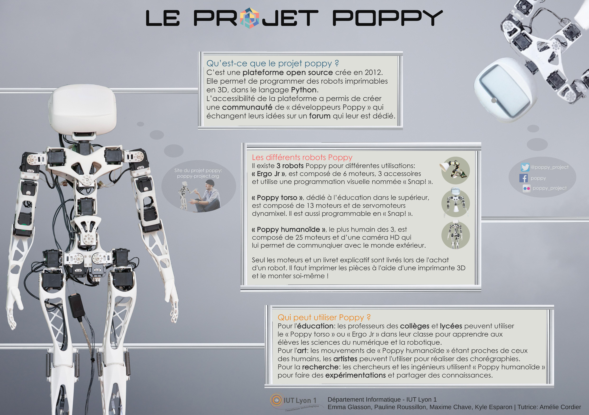
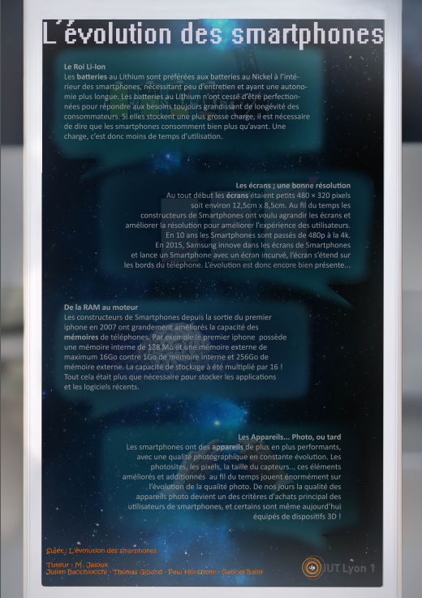
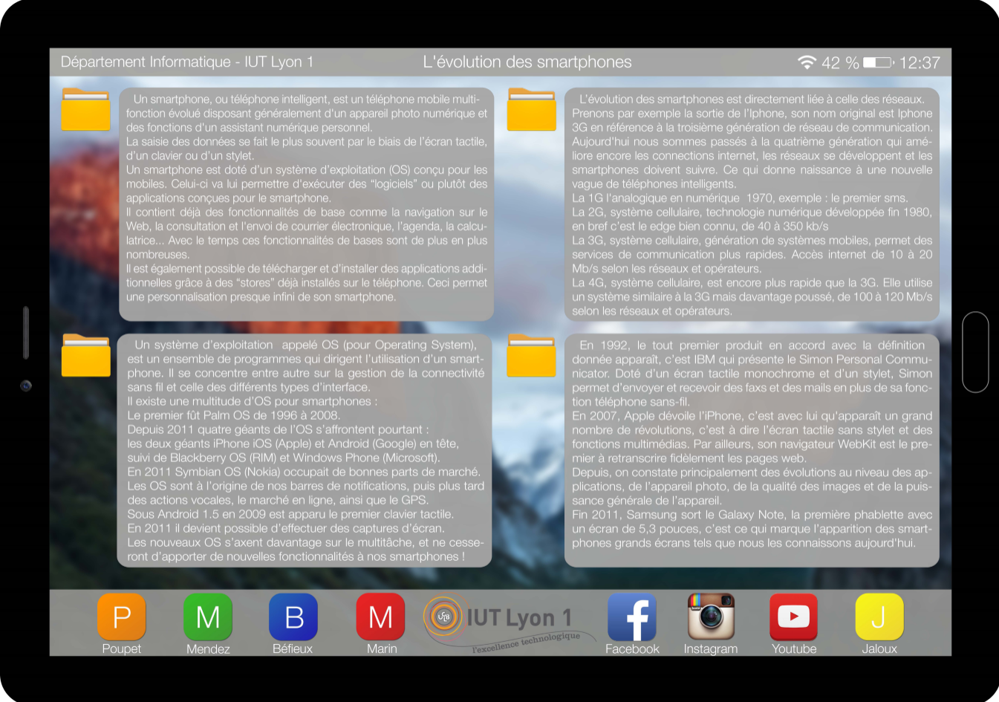
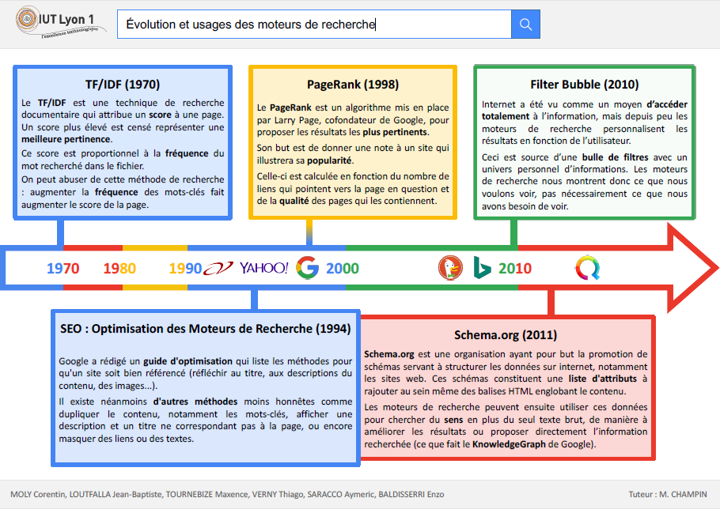

PROJET TUTEURE SEMESTRE 1
Accueil Présentation Semestre 1 Semestre 2 Semestre 3 Semestre 4
Sur cette page, vous trouverez des informations et des images sur les projets tutorés du premier semestre.


Voici par exemple deux projets de premier semestre. ne sont-ils pas magnifiques ?
Chaque groupe choisi un sujet et un tuteur (un professeur) avec lequel il doit réaliser une affiche de ce genre. chacun a casiemment carte blanche, à partir du moment où le tuteur est d'accord !
Les éleves sont notés sur l'esthétique, leur relation avec le tuteur et le contenu de l'affiche. Voici d'autres exemples de projets du 1e semestre.


L'affiche au format A1 à réaliser au semestre 1 représente un travail de recherche sur un thème choisi par les éléves en lien avec l'informatique. Le but d'une affiche est d'attirer l'oeil pour ammener les passants à la lire et ne pas les faire regretter le temps qu'ils y ont passé. C'est à la fois un exercice de recherche d'information, de synthèse, de communication et de graphisme. C'est un excellent travail de groupe.
Pour être imprimés, ces posters doivent respecter quelques contraintes, tirées directemment du mail d'instructions :
L'évalution du poster porte sur quatre points :